import copy
import numpy as np
import pandas as pd
import numpy as np
import warnings
from sklearn.ensemble import RandomForestRegressor
from sklearn.preprocessing import MinMaxScaler
from sklearn.gaussian_process import GaussianProcessRegressor
from sklearn.kernel_approximation import Nystroem
from sklearn.gaussian_process.kernels import RBF, WhiteKernel
from sklearn.pipeline import Pipeline
from sklearn.model_selection import train_test_split
from sklearn.metrics import r2_score
import matplotlib.pyplot as plt
import seaborn as sns
from scipy.stats.qmc import LatinHypercube
from scipy.optimize import dual_annealing
from spotdesirability.utils.desirability import DMin, DMax, DOverall
from spotoptim.sampling.mm import mmphi_intensive, mmphi_intensive_update, mm_improvement_contour
from spotoptim.inspection.predictions import plot_actual_vs_predicted
from spotoptim.inspection import (generate_mdi, generate_imp, plot_importances, plot_feature_importances, plot_feature_scatter_matrix)
from spotoptim.utils.boundaries import get_boundaries, map_to_original_scale
from spotoptim.mo.pareto import is_pareto_efficient
from spotoptim.plot.mo import plot_mo
from spotoptim.eda import plot_ip_boxplots, plot_ip_histograms
from spotoptim.utils import get_combinations
from spotoptim.sampling.lhs import rlh
from spotoptim.sampling.mm import (bestlh, plot_mmphi_vs_n_lhs, mmphi, mmphi_intensive, mm_improvement, plot_mmphi_vs_points, mmphi_intensive_update)
from spotoptim.mo import mo_mm_desirability_function, mo_mm_desirability_optimizer
from spotoptim.mo.mo_mm import mo_xy_desirability_plot
from spotoptim.function.mo import mo_conv2_max
from spotoptim.mo.pareto import (mo_xy_surface, mo_xy_contour, mo_pareto_optx_plot)
from spotoptim.utils.eval import mo_cv_models, mo_eval_models
warnings.filterwarnings("ignore")24 Multi-Objective Optimization Support in SpotOptim
n_estimators=100
max_depth = None
random_state=4224.1 Overview
SpotOptim supports multi-objective optimization functions with automatic detection and flexible scalarization strategies. The parameter fun_mo2so can be used to convert multi-objective values to single-objective values. If the function fun returns several objective function values, say \(f_1, f_2, \ldots, f_p\), these values are stored in y_mo and can be be used by fun_mo2so. The fun_mo2so parameter is optional. If it is None, which is the default, only the first objective \(f_1\) is used as single-objective and the remaining objectives \(f_2, \ldots, f_p\) are stored in y_mo, but not further used in the optimization process.
Note
fun_mo2so
fun_mo2so(callable, optional): Function to convert multi-objective values to single-objective- Takes array of shape
(n_samples, n_objectives) - Returns array of shape
(n_samples,) - If
None, uses first objective (default behavior)
- Takes array of shape
NoteAttributes
y_mo(ndarray or None): Stores all multi-objective function values- Shape:
(n_samples, n_objectives)for multi-objective problems Nonefor single-objective problems
- Shape:
NoteMethods
get_shape(y): Get shape of objective function outputstore_mo(y_mo): Store multi-objective values with automatic appendingmo2so(y_mo): Convert multi-objective to single-objective values
SpotOptim’s method evaluate_function(X) automatically detects multi-objective functions. It calls mo2so() to convert multi-objective to single-objective. It also stores the original multi-objective values in y_mo. And it returns single-objective values for optimization.
Example 24.2 (Default Behavior (Use First Objective))
Example 24.1
import numpy as np
from spotoptim import SpotOptim
def bi_objective(X):
"""Two conflicting objectives."""
obj1 = np.sum(X**2, axis=1) # Minimize at origin
obj2 = np.sum((X - 2)**2, axis=1) # Minimize at (2, 2)
return np.column_stack([obj1, obj2])
optimizer = SpotOptim(
fun=bi_objective,
bounds=[(-5, 5), (-5, 5)],
max_iter=30,
n_initial=15,
seed=42,
max_surrogate_points=30
)
result = optimizer.optimize()
print(f"Best x: {result.x}") # Near [0, 0]
print(f"Best f(x): {result.fun}") # Minimizes obj1
print(f"MO values stored: {optimizer.y_mo.shape}") # (30, 2)Best x: [ 1.27715058e-06 -1.67854190e-04]
Best f(x): 2.8176660124602576e-08
MO values stored: (30, 2)Example 24.4 (Weighted Sum Scalarization)
Example 24.3
def weighted_sum(y_mo):
"""Equal weighting of objectives."""
return 0.5 * y_mo[:, 0] + 0.5 * y_mo[:, 1]
optimizer = SpotOptim(
fun=bi_objective,
bounds=[(-5, 5), (-5, 5)],
max_iter=30,
n_initial=15,
fun_mo2so=weighted_sum, # Custom conversion
seed=42,
max_surrogate_points=30
)
result = optimizer.optimize()
print(f"Compromise solution: {result.x}") # Near [1, 1]Compromise solution: [1.00077461 0.99751875]Example 24.6 (Min-Max Scalarization)
Example 24.5
def min_max(y_mo):
"""Minimize the maximum objective."""
return np.max(y_mo, axis=1)
optimizer = SpotOptim(
fun=bi_objective,
bounds=[(-5, 5), (-5, 5)],
max_iter=30,
n_initial=15,
fun_mo2so=min_max,
seed=42,
max_surrogate_points=30
)
result = optimizer.optimize()
# Finds solution with balanced objective valuesExample 24.8 (Three or More Objectives)
Example 24.7
def three_objectives(X):
"""Three different norms."""
obj1 = np.sum(X**2, axis=1) # L2 norm
obj2 = np.sum(np.abs(X), axis=1) # L1 norm
obj3 = np.max(np.abs(X), axis=1) # L-infinity norm
return np.column_stack([obj1, obj2, obj3])
def custom_scalarization(y_mo):
"""Weighted combination."""
return 0.4 * y_mo[:, 0] + 0.3 * y_mo[:, 1] + 0.3 * y_mo[:, 2]
optimizer = SpotOptim(
fun=three_objectives,
bounds=[(-5, 5), (-5, 5), (-5, 5)],
max_iter=35,
n_initial=20,
fun_mo2so=custom_scalarization,
seed=42,
max_surrogate_points=30
)
result = optimizer.optimize()Example 24.10 (Noise Handling)
Example 24.9
def noisy_bi_objective(X):
"""Noisy multi-objective function."""
noise1 = np.random.normal(0, 0.05, X.shape[0])
noise2 = np.random.normal(0, 0.05, X.shape[0])
obj1 = np.sum(X**2, axis=1) + noise1
obj2 = np.sum((X - 1)**2, axis=1) + noise2
return np.column_stack([obj1, obj2])
optimizer = SpotOptim(
fun=noisy_bi_objective,
bounds=[(-5, 5), (-5, 5)],
max_iter=40,
n_initial=10,
repeats_initial=3, # Handle noise
repeats_surrogate=2,
seed=42,
max_surrogate_points=30
)
result = optimizer.optimize()
# Works seamlessly with noise handling24.2 Common Scalarization Strategies
24.2.1 1. Weighted Sum
def weighted_sum(y_mo, weights=[0.5, 0.5]):
return sum(w * y_mo[:, i] for i, w in enumerate(weights))Use when: Objectives have similar scales and you want linear trade-offs
24.2.2 2. Weighted Sum with Normalization
def normalized_weighted_sum(y_mo, weights=[0.5, 0.5]):
# Normalize each objective to [0, 1]
y_norm = (y_mo - y_mo.min(axis=0)) / (y_mo.max(axis=0) - y_mo.min(axis=0) + 1e-10)
return sum(w * y_norm[:, i] for i, w in enumerate(weights))Use when: Objectives have very different scales
24.2.3 3. Min-Max (Chebyshev)
def min_max(y_mo):
return np.max(y_mo, axis=1)Use when: You want balanced performance across all objectives
24.2.4 4. Target Achievement
def target_achievement(y_mo, targets=[0.0, 0.0]):
# Minimize deviation from targets
return np.sum((y_mo - targets)**2, axis=1)Use when: You have specific target values for each objective
24.2.5 5. Product
def product(y_mo):
return np.prod(y_mo + 1e-10, axis=1) # Add small value to avoid zeroUse when: All objectives should be minimized together
24.3 Integration with Other Features
Multi-objective support works seamlessly with:
✅ Noise Handling - Use repeats_initial and repeats_surrogate
✅ OCBA - Use ocba_delta for intelligent re-evaluation
✅ TensorBoard Logging - Logs converted single-objective values
✅ Dimension Reduction - Fixed dimensions work normally
✅ Custom Variable Names - var_name parameter supported
24.4 Implementation Details
24.4.1 Automatic Detection
SpotOptim automatically detects multi-objective functions:
- If function returns 2D array (n_samples, n_objectives), it’s multi-objective
- If function returns 1D array (n_samples,), it’s single-objective
24.4.2 Data Flow
User Function → y_mo (raw) → mo2so() → y_ (single-objective)
↓
y_mo (stored)- Function returns multi-objective values
store_mo()saves them iny_moattributemo2so()converts to single-objective usingfun_mo2soor default- Surrogate model optimizes the single-objective values
- All original multi-objective values remain accessible in
y_mo
24.4.3 Backward Compatibility
✅ Fully backward compatible:
- Single-objective functions work unchanged
fun_mo2sodefaults toNoney_moisNonefor single-objective problems- No breaking changes to existing code
24.5 Limitations and Notes
24.5.1 What This Is
- ✅ Scalarization approach to multi-objective optimization
- ✅ Single solution found per optimization run
- ✅ Different scalarizations → different Pareto solutions
- ✅ Suitable for preference-based multi-objective optimization
24.5.2 What This Is Not
- ❌ Not a true multi-objective optimizer (doesn’t find Pareto front)
- ❌ Doesn’t generate multiple solutions in one run
- ❌ Not suitable for discovering entire Pareto front
24.5.3 For True Multi-Objective Optimization
For finding the complete Pareto front, consider specialized tools:
- pymoo: Comprehensive multi-objective optimization framework
- platypus: Multi-objective optimization library
- NSGA-II, MOEA/D: Dedicated multi-objective algorithms
24.6 Benchmark Multi-Objective Test Functions
SpotOptim includes 12 multi-objective benchmark functions in spotoptim.function.mo. These functions are widely used to evaluate and compare multi-objective optimization algorithms.
24.6.1 Function Overview
| Function | Objectives | Variables | Pareto Front | Characteristics |
|---|---|---|---|---|
| ZDT1 | 2 | 30 | Convex | Unimodal, minimization |
| ZDT2 | 2 | 30 | Non-convex | Unimodal, minimization |
| ZDT3 | 2 | 30 | Disconnected | Multimodal, minimization |
| ZDT4 | 2 | 10 | Convex | Many local fronts |
| ZDT6 | 2 | 10 | Non-convex | Non-uniform density |
| DTLZ1 | Scalable | n_obj+4 | Linear | Multimodal |
| DTLZ2 | Scalable | n_obj+9 | Spherical | Unimodal |
| Schaffer N1 | 2 | 1 | Convex | Simple, minimization |
| Fonseca-Fleming | 2 | 2-10 | Concave | Symmetric, minimization |
| mo_conv2_min | 2 | 2 | Convex | Convex, minimization |
| mo_conv2_max | 2 | 2 | Convex | Convex, maximization |
| Kursawe | 2 | 3 | Disconnected | Non-convex, disconnected minimization |
mo_conv2_min is a smooth convex minimization pair with objectives \(f_1(x, y) = x^2 + y^2\) and \(f_2(x, y) = (x - 1)^2 + (y - 1)^2\) on \([0, 1]^2\), producing a convex quadratic Pareto front along \(x = y\). mo_conv2_max flips both objectives for maximization via \(f_1(x, y) = 2 - (x^2 + y^2)\) and \(f_2(x, y) = 2 - ((1 - x)^2 + (1 - y)^2)\), keeping objective values bounded in \([0, 2]\).
24.6.2 Example 6: ZDT1 - Convex Pareto Front
ZDT1 is a classical bi-objective test problem with a convex Pareto front, widely used for benchmarking.
import numpy as np
import matplotlib.pyplot as plt
from spotoptim.function.mo import zdt1
from spotoptim import SpotOptim
# Generate data for visualization
n_points = 100
x1_range = np.linspace(0, 1, n_points)
# Pareto front: x1 in [0,1], rest = 0
X_pareto = np.column_stack([x1_range, np.zeros((n_points, 2))])
y_pareto = zdt1(X_pareto)
# Non-optimal points for comparison
X_non_optimal = np.random.rand(200, 3)
y_non_optimal = zdt1(X_non_optimal)Figure 24.1 visualizes the Pareto front:
fig, (ax1, ax2) = plt.subplots(1, 2, figsize=(12, 5))
# Plot objective space
ax1.scatter(y_non_optimal[:, 0], y_non_optimal[:, 1],
alpha=0.3, label='Non-optimal', s=20)
ax1.plot(y_pareto[:, 0], y_pareto[:, 1],
'r-', linewidth=2, label='Pareto Front')
ax1.set_xlabel('f1(x) = x1')
ax1.set_ylabel('f2(x) = g(x) * [1 - √(x1/g(x))]')
ax1.set_title('ZDT1: Convex Pareto Front')
ax1.legend()
ax1.grid(True, alpha=0.3)
# Plot decision space (first two variables)
ax2.scatter(X_non_optimal[:, 0], X_non_optimal[:, 1],
alpha=0.3, label='Non-optimal', s=20)
ax2.scatter(X_pareto[:, 0], X_pareto[:, 1],
c='red', label='Pareto Optimal', s=30)
ax2.set_xlabel('x1')
ax2.set_ylabel('x2')
ax2.set_title('Decision Space (first 2 dimensions)')
ax2.legend()
ax2.grid(True, alpha=0.3)
plt.tight_layout()
plt.show()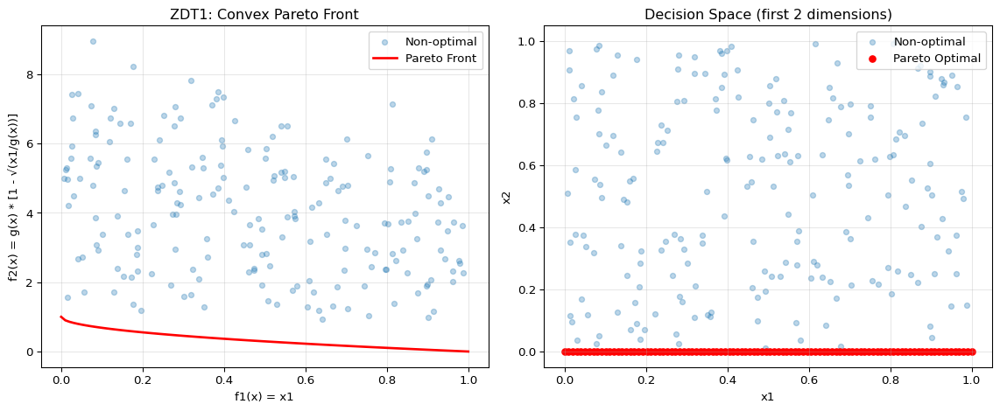
print("ZDT1 Characteristics:")
print("- Convex Pareto front: f2 = 1 - √f1")
print("- Optimal when x2, x3, ..., xn = 0")
print("- Easy to solve, good for testing basic functionality")ZDT1 Characteristics:
- Convex Pareto front: f2 = 1 - √f1
- Optimal when x2, x3, ..., xn = 0
- Easy to solve, good for testing basic functionalityNow optimize using SpotOptim with weighted sum:
def weighted_sum_zdt1(y_mo):
"""Equal weighting for ZDT1."""
return 0.5 * y_mo[:, 0] + 0.5 * y_mo[:, 1]
optimizer = SpotOptim(
fun=zdt1,
bounds=[(0, 1)] * 30, # 30 variables in [0, 1]
max_iter=50,
n_initial=20,
fun_mo2so=weighted_sum_zdt1,
seed=42,
max_surrogate_points=30
)
result = optimizer.optimize()
print(f"\nOptimization Result:")
print(f"Best x (first 5 dims): {result.x[:5]}")
print(f"Best scalarized value: {result.fun:.6f}")
# Evaluate multi-objective values
y_best = zdt1(result.x.reshape(1, -1))
print(f"f1 = {y_best[0, 0]:.6f}, f2 = {y_best[0, 1]:.6f}")
Optimization Result:
Best x (first 5 dims): [1. 0. 0. 0. 0.]
Best scalarized value: 0.500000
f1 = 1.000000, f2 = 0.00000024.6.3 Example 7: ZDT2 - Non-Convex Pareto Front
ZDT2 has a non-convex Pareto front, making it more challenging than ZDT1.
from spotoptim.function.mo import zdt2
# Generate Pareto front
X_pareto = np.column_stack([x1_range, np.zeros((n_points, 2))])
y_pareto = zdt2(X_pareto)
# Non-optimal points
y_non_optimal = zdt2(X_non_optimal)Figure 24.2 visualizes the Pareto front:
fig, ax = plt.subplots(figsize=(8, 6))
ax.scatter(y_non_optimal[:, 0], y_non_optimal[:, 1],
alpha=0.3, label='Non-optimal', s=20)
ax.plot(y_pareto[:, 0], y_pareto[:, 1],
'r-', linewidth=2, label='Pareto Front')
ax.set_xlabel('f1(x) = x1')
ax.set_ylabel('f2(x) = g(x) * [1 - (x1/g(x))²]')
ax.set_title('ZDT2: Non-Convex Pareto Front')
ax.legend()
ax.grid(True, alpha=0.3)
plt.tight_layout()
plt.show()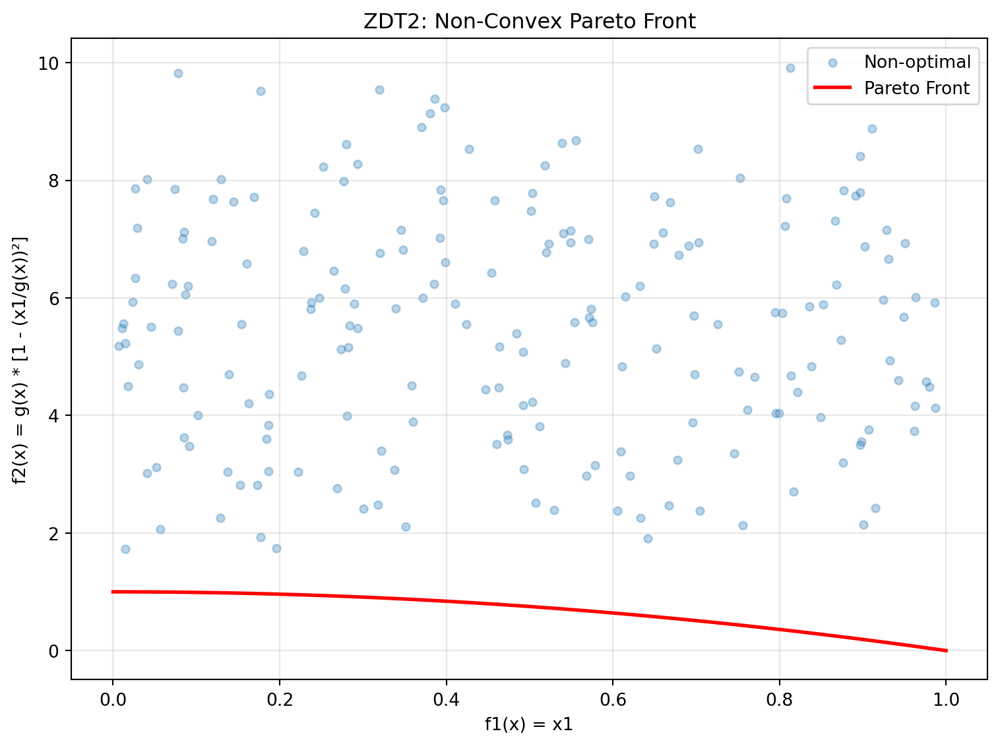
print("ZDT2 Characteristics:")
print("- Non-convex Pareto front: f2 = 1 - f1²")
print("- Tests algorithm's ability to handle non-convexity")
print("- Optimal when x2, x3, ..., xn = 0")ZDT2 Characteristics:
- Non-convex Pareto front: f2 = 1 - f1²
- Tests algorithm's ability to handle non-convexity
- Optimal when x2, x3, ..., xn = 024.6.4 Example 8: ZDT3 - Disconnected Pareto Front
ZDT3 has a discontinuous Pareto front consisting of 5 separate regions.
from spotoptim.function.mo import zdt3
# Generate Pareto front
X_pareto = np.column_stack([x1_range, np.zeros((n_points, 2))])
y_pareto = zdt3(X_pareto)
# Non-optimal points
y_non_optimal = zdt3(X_non_optimal)Figure 24.3 visualizes the Pareto front:
fig, ax = plt.subplots(figsize=(8, 6))
ax.scatter(y_non_optimal[:, 0], y_non_optimal[:, 1],
alpha=0.3, label='Non-optimal', s=20)
ax.plot(y_pareto[:, 0], y_pareto[:, 1],
'r-', linewidth=2, label='Pareto Front')
ax.set_xlabel('f1(x) = x1')
ax.set_ylabel('f2(x) with sin term')
ax.set_title('ZDT3: Disconnected Pareto Front')
ax.legend()
ax.grid(True, alpha=0.3)
plt.tight_layout()
plt.show()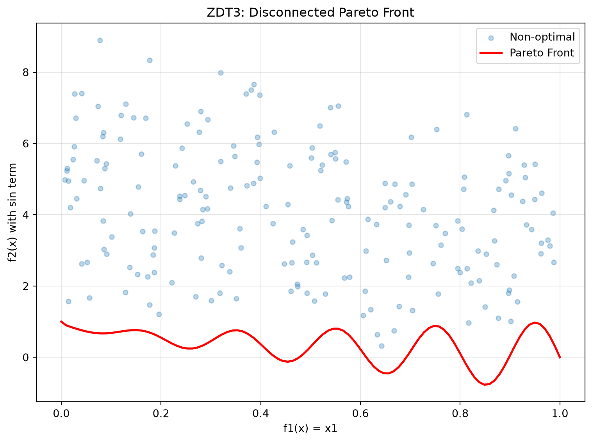
print("ZDT3 Characteristics:")
print("- Disconnected Pareto front with 5 separate regions")
print("- Tests diversity maintenance in algorithms")
print("- sin(10πx1) term creates discontinuities")ZDT3 Characteristics:
- Disconnected Pareto front with 5 separate regions
- Tests diversity maintenance in algorithms
- sin(10πx1) term creates discontinuities24.6.5 Example 9: ZDT4 - Multimodal with Many Local Fronts
ZDT4 has 21^9 local Pareto fronts, testing the algorithm’s ability to escape local optima.
from spotoptim.function.mo import zdt4
# Generate Pareto front (same as ZDT1 when optimal)
X_pareto = np.column_stack([x1_range, np.zeros((n_points, 9))])
y_pareto = zdt4(X_pareto)
# Non-optimal points with multimodal g-function
X_non_optimal_zdt4 = np.random.rand(200, 10)
X_non_optimal_zdt4[:, 0] = np.clip(X_non_optimal_zdt4[:, 0], 0, 1) # x1 in [0,1]
X_non_optimal_zdt4[:, 1:] = X_non_optimal_zdt4[:, 1:] * 10 - 5 # others in [-5,5]
y_non_optimal = zdt4(X_non_optimal_zdt4)Figure 24.4 visualizes the Pareto front:
fig, (ax1, ax2) = plt.subplots(1, 2, figsize=(12, 5))
# Objective space
ax1.scatter(y_non_optimal[:, 0], y_non_optimal[:, 1],
alpha=0.3, label='Non-optimal', s=20)
ax1.plot(y_pareto[:, 0], y_pareto[:, 1],
'r-', linewidth=2, label='Pareto Front')
ax1.set_xlabel('f1(x) = x1')
ax1.set_ylabel('f2(x)')
ax1.set_title('ZDT4: Multimodal - Objective Space')
ax1.legend()
ax1.grid(True, alpha=0.3)
# Show multimodal landscape for x2
x2_range = np.linspace(-5, 5, 100)
g_vals = 1 + 10 * 9 + (x2_range**2 - 10 * np.cos(4 * np.pi * x2_range)) * 9
ax2.plot(x2_range, g_vals)
ax2.set_xlabel('x2 (or x3, ..., x10)')
ax2.set_ylabel('Contribution to g(x)')
ax2.set_title('Multimodal Landscape')
ax2.grid(True, alpha=0.3)
plt.tight_layout()
plt.show()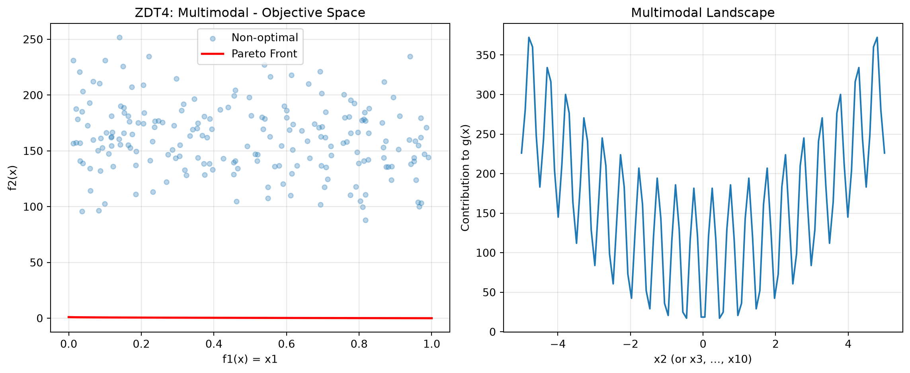
print("ZDT4 Characteristics:")
print("- 21^9 local Pareto fronts")
print("- Tests global search capability")
print("- x1 in [0,1], x_i in [-5,5] for i=2,...,10")ZDT4 Characteristics:
- 21^9 local Pareto fronts
- Tests global search capability
- x1 in [0,1], x_i in [-5,5] for i=2,...,1024.6.6 Example 10: ZDT6 - Non-Uniform Density
ZDT6 has a non-uniform search space with low density of solutions near the Pareto front.
from spotoptim.function.mo import zdt6
# Generate Pareto front
X_pareto = np.column_stack([x1_range, np.zeros((n_points, 2))])
y_pareto = zdt6(X_pareto)
# Non-optimal points
y_non_optimal = zdt6(X_non_optimal)Figure 24.5 visualizes the Pareto front:
fig, (ax1, ax2) = plt.subplots(1, 2, figsize=(12, 5))
# Objective space
ax1.scatter(y_non_optimal[:, 0], y_non_optimal[:, 1],
alpha=0.3, label='Non-optimal', s=20)
ax1.plot(y_pareto[:, 0], y_pareto[:, 1],
'r-', linewidth=2, label='Pareto Front')
ax1.set_xlabel('f1(x)')
ax1.set_ylabel('f2(x)')
ax1.set_title('ZDT6: Non-Uniform Density')
ax1.legend()
ax1.grid(True, alpha=0.3)
# Show f1 non-uniformity
ax2.plot(x1_range, 1 - np.exp(-4 * x1_range) * (np.sin(6 * np.pi * x1_range)**6))
ax2.set_xlabel('x1')
ax2.set_ylabel('f1(x1)')
ax2.set_title('Non-uniform f1 mapping')
ax2.grid(True, alpha=0.3)
plt.tight_layout()
plt.show()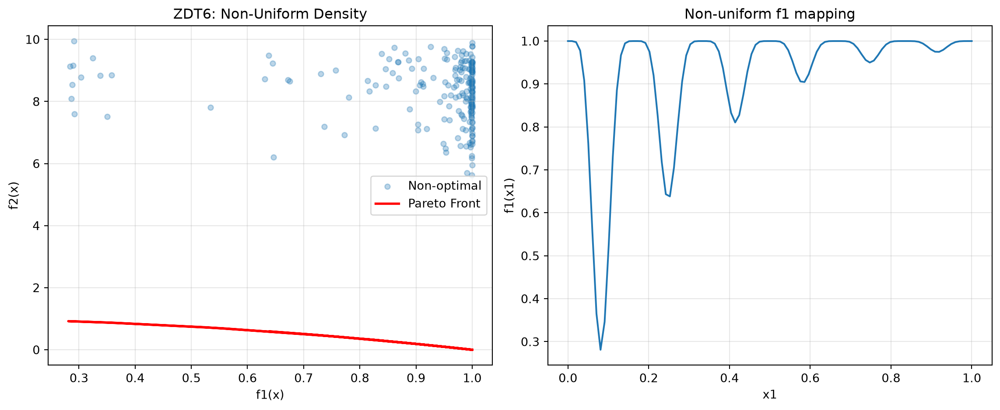
print("ZDT6 Characteristics:")
print("- Non-uniform density of Pareto optimal solutions")
print("- Low density near the Pareto front")
print("- Tests diversity maintenance")ZDT6 Characteristics:
- Non-uniform density of Pareto optimal solutions
- Low density near the Pareto front
- Tests diversity maintenance24.6.7 Example 11: DTLZ2 - Scalable Spherical Pareto Front
DTLZ2 is a scalable test problem with a concave spherical Pareto front.
from spotoptim.function.mo import dtlz2
# 3D visualization for 3 objectives
n_samples = 500
X_samples = np.random.rand(n_samples, 12)
y_samples = dtlz2(X_samples, n_obj=3)
# Generate Pareto optimal points (on unit sphere)
theta = np.linspace(0, np.pi/2, 30)
phi = np.linspace(0, np.pi/2, 30)
theta_grid, phi_grid = np.meshgrid(theta, phi)
f1 = np.cos(theta_grid) * np.cos(phi_grid)
f2 = np.cos(theta_grid) * np.sin(phi_grid)
f3 = np.sin(theta_grid)Figure 24.6 visualizes the Pareto front:
fig = plt.figure(figsize=(10, 8))
ax = fig.add_subplot(111, projection='3d')
# Pareto front surface
ax.plot_surface(f1, f2, f3, alpha=0.3, color='red', label='Pareto Front')
# Sample points
colors = np.linalg.norm(y_samples, axis=1)
scatter = ax.scatter(y_samples[:, 0], y_samples[:, 1], y_samples[:, 2],
c=colors, cmap='viridis', alpha=0.5, s=10)
ax.set_xlabel('f1(x)')
ax.set_ylabel('f2(x)')
ax.set_zlabel('f3(x)')
ax.set_title('DTLZ2: Spherical Pareto Front (3 objectives)')
plt.colorbar(scatter, label='Distance from origin')
plt.tight_layout()
plt.show()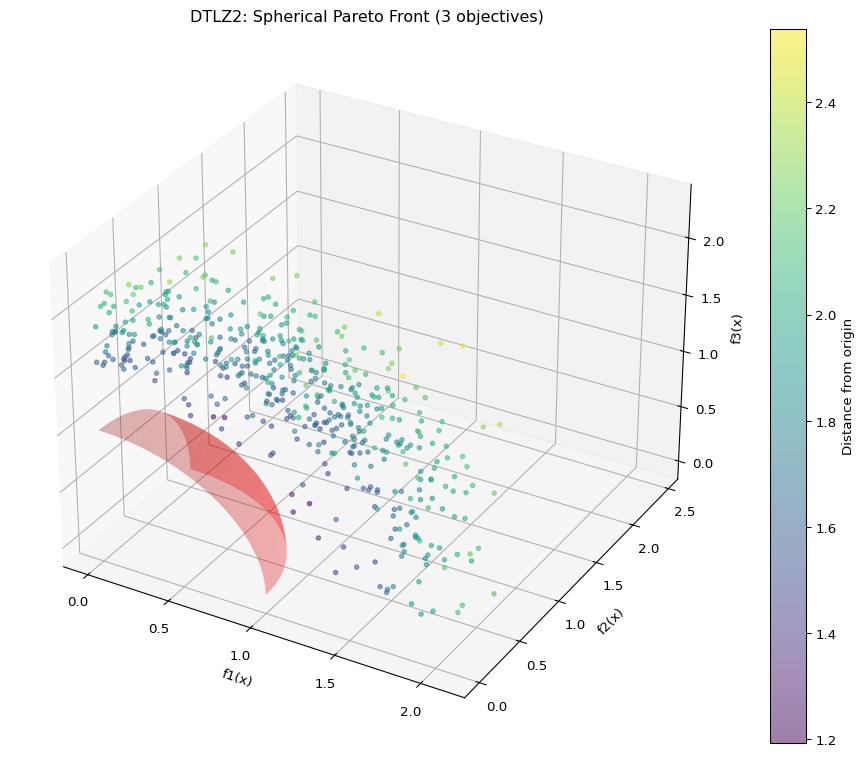
print("DTLZ2 Characteristics:")
print("- Scalable number of objectives")
print("- Pareto front is unit sphere: Σf_i² = 1")
print("- Concave, unimodal")
print(f"- Sample: sum of squares = {np.sum(y_samples[0]**2):.4f}")DTLZ2 Characteristics:
- Scalable number of objectives
- Pareto front is unit sphere: Σf_i² = 1
- Concave, unimodal
- Sample: sum of squares = 4.0966Optimize DTLZ2 with 3 objectives:
def weighted_sum_3obj(y_mo):
"""Equal weighting for 3 objectives."""
return np.mean(y_mo, axis=1)
optimizer = SpotOptim(
fun=lambda X: dtlz2(X, n_obj=3),
bounds=[(0, 1)] * 12, # 12 variables for 3 objectives
max_iter=50,
n_initial=25,
fun_mo2so=weighted_sum_3obj,
seed=42,
max_surrogate_points=30
)
result = optimizer.optimize()
# Evaluate
y_best = dtlz2(result.x.reshape(1, -1), n_obj=3)
print(f"\nOptimization Result:")
print(f"f1 = {y_best[0, 0]:.4f}, f2 = {y_best[0, 1]:.4f}, f3 = {y_best[0, 2]:.4f}")
print(f"Sum of squares: {np.sum(y_best[0]**2):.4f} (should be ~1.0)")
Optimization Result:
f1 = 0.0000, f2 = 0.0000, f3 = 1.2506
Sum of squares: 1.5640 (should be ~1.0)24.6.8 Example 12: Schaffer N1 - Simple Bi-Objective
Schaffer N1 is one of the earliest and simplest multi-objective test functions.
from spotoptim.function.mo import schaffer_n1
# Generate data
x_range = np.linspace(-10, 10, 200).reshape(-1, 1)
y_schaffer = schaffer_n1(x_range)
# Pareto optimal range [0, 2]
x_pareto = np.linspace(0, 2, 100).reshape(-1, 1)
y_pareto = schaffer_n1(x_pareto)Figure 24.7 visualizes the Pareto front:
fig, (ax1, ax2) = plt.subplots(1, 2, figsize=(12, 5))
# Objective space
ax1.plot(y_schaffer[:, 0], y_schaffer[:, 1], 'b-', alpha=0.3, label='All points')
ax1.plot(y_pareto[:, 0], y_pareto[:, 1], 'r-', linewidth=2, label='Pareto Front')
ax1.set_xlabel('f1(x) = x²')
ax1.set_ylabel('f2(x) = (x-2)²')
ax1.set_title('Schaffer N1: Objective Space')
ax1.legend()
ax1.grid(True, alpha=0.3)
# Decision space
ax2.plot(x_range, y_schaffer[:, 0], label='f1(x) = x²')
ax2.plot(x_range, y_schaffer[:, 1], label='f2(x) = (x-2)²')
ax2.axvspan(0, 2, alpha=0.2, color='red', label='Pareto Optimal')
ax2.set_xlabel('x')
ax2.set_ylabel('Objective values')
ax2.set_title('Decision Space')
ax2.legend()
ax2.grid(True, alpha=0.3)
plt.tight_layout()
plt.show()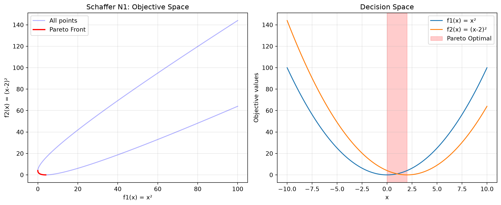
print("Schaffer N1 Characteristics:")
print("- Simplest multi-objective function")
print("- 1D decision variable")
print("- Pareto optimal: x ∈ [0, 2]")
print("- Convex Pareto front")Schaffer N1 Characteristics:
- Simplest multi-objective function
- 1D decision variable
- Pareto optimal: x ∈ [0, 2]
- Convex Pareto front24.6.9 Example 13: Fonseca-Fleming - Symmetric Concave Front
Fonseca-Fleming is a classical bi-objective problem with a concave Pareto front. It is defined for 2 to 10 decision variables as follows: \[ f_1(x) = 1 - \exp\left(-\sum_{i=1}^{n} (x_i - \frac{1}{\sqrt{n}})^2\right) f_2(x) = 1 - \exp\left(-\sum_{i=1}^{n} (x_i + \frac{1}{\sqrt{n}})^2\right), \] where \(x_i \in [-2, 2]\). The Pareto optimal solutions satisfy: \[ \sum_{i=1}^{n} x_i^2 = \frac{1}{n}. \]
from spotoptim.function.mo import fonseca_fleming
# Generate data for 2D
n_grid = 50
x1_ff = np.linspace(-2, 2, n_grid)
x2_ff = np.linspace(-2, 2, n_grid)
X1_grid, X2_grid = np.meshgrid(x1_ff, x2_ff)
# Evaluate on grid
X_grid = np.column_stack([X1_grid.ravel(), X2_grid.ravel()])
y_grid = fonseca_fleming(X_grid)
# Pareto optimal points (approximately)
X_pareto_ff = np.linspace(-1/np.sqrt(2), 1/np.sqrt(2), 100)
X_pareto_2d = np.column_stack([X_pareto_ff, X_pareto_ff])
y_pareto_ff = fonseca_fleming(X_pareto_2d)Figure 24.8 visualizes the Pareto front:
fig, (ax1, ax2) = plt.subplots(1, 2, figsize=(12, 5))
# Objective space
scatter = ax1.scatter(y_grid[:, 0], y_grid[:, 1],
c=np.linalg.norm(y_grid, axis=1),
cmap='viridis', alpha=0.5, s=10)
ax1.plot(y_pareto_ff[:, 0], y_pareto_ff[:, 1],
'r-', linewidth=2, label='Approx. Pareto Front')
ax1.set_xlabel('f1(x)')
ax1.set_ylabel('f2(x)')
ax1.set_title('Fonseca-Fleming: Concave Front')
ax1.legend()
ax1.grid(True, alpha=0.3)
plt.colorbar(scatter, ax=ax1, label='Distance from origin')
# Decision space
ax2.contourf(X1_grid, X2_grid, y_grid[:, 0].reshape(n_grid, n_grid),
levels=20, cmap='viridis', alpha=0.6)
ax2.plot(X_pareto_2d[:, 0], X_pareto_2d[:, 1],
'r-', linewidth=2, label='Pareto Optimal Region')
ax2.set_xlabel('x1')
ax2.set_ylabel('x2')
ax2.set_title('Decision Space (f1)')
ax2.legend()
plt.colorbar(ax2.contourf(X1_grid, X2_grid, y_grid[:, 0].reshape(n_grid, n_grid),
levels=20, cmap='viridis', alpha=0.6), ax=ax2)
plt.tight_layout()
plt.show()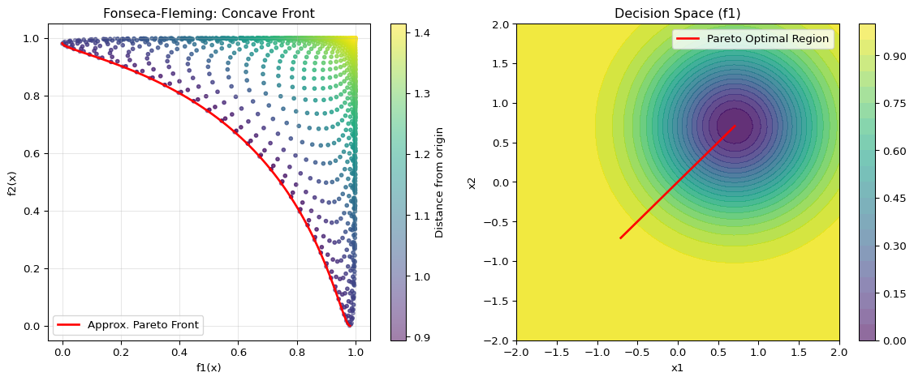
print("Fonseca-Fleming Characteristics:")
print("- Concave Pareto front (minimization)")
print("- Symmetric problem")
print("- Scalable to higher dimensions")Fonseca-Fleming Characteristics:
- Concave Pareto front (minimization)
- Symmetric problem
- Scalable to higher dimensions24.7 Example 14: Kursawe - Non-Convex Disconnected Front
Optimize Kursawe with min-max scalarization:
from spotoptim.function.mo import kursawe
def min_max_kursawe(y_mo):
"""Minimize maximum objective (Chebyshev)."""
return np.max(y_mo, axis=1)
optimizer = SpotOptim(
fun=kursawe,
bounds=[(-5, 5)] * 3,
max_iter=50,
n_initial=20,
fun_mo2so=min_max_kursawe,
seed=42,
max_surrogate_points=30
)
result = optimizer.optimize()
y_best = kursawe(result.x.reshape(1, -1))
print(f"\nOptimization Result:")
print(f"Best x: {result.x}")
print(f"f1 = {y_best[0, 0]:.4f}, f2 = {y_best[0, 1]:.4f}")
print(f"Max objective: {max(y_best[0]):.4f}")
Optimization Result:
Best x: [-3.59284321 4.89413033 -0.90817413]
f1 = -6.6645, f2 = -3.7006
Max objective: -3.700624.7.1 Comparison: Different Scalarization Strategies on ZDT1
Let’s compare how different scalarization strategies find different Pareto solutions:
scalarizations = {
'First Objective': None, # Default
'Equal Weight': lambda y: 0.5 * y[:, 0] + 0.5 * y[:, 1],
'Favor f1': lambda y: 0.8 * y[:, 0] + 0.2 * y[:, 1],
'Favor f2': lambda y: 0.2 * y[:, 0] + 0.8 * y[:, 1],
'Min-Max': lambda y: np.max(y, axis=1),
}
results = {}
for name, scalarization in scalarizations.items():
opt = SpotOptim(
fun=zdt1,
bounds=[(0, 1)] * 30,
max_iter=40,
n_initial=15,
fun_mo2so=scalarization,
seed=42,
verbose=0,
max_surrogate_points=30
)
res = opt.optimize()
y_res = zdt1(res.x.reshape(1, -1))
results[name] = (res.x, y_res[0])Figure 24.9 visualizes the results:
fig, ax = plt.subplots(figsize=(10, 6))
# Plot Pareto front
X_pareto = np.column_stack([x1_range, np.zeros((n_points, 29))])
y_pareto = zdt1(X_pareto)
ax.plot(y_pareto[:, 0], y_pareto[:, 1], 'k-', linewidth=2,
label='True Pareto Front', alpha=0.3)
# Plot optimization results
colors = ['blue', 'green', 'orange', 'purple', 'red']
for (name, (x, y)), color in zip(results.items(), colors):
ax.scatter(y[0], y[1], s=100, c=color, marker='*',
label=f'{name}: ({y[0]:.3f}, {y[1]:.3f})', zorder=5)
ax.set_xlabel('f1(x)')
ax.set_ylabel('f2(x)')
ax.set_title('Different Scalarization Strategies Find Different Pareto Solutions')
ax.legend()
ax.grid(True, alpha=0.3)
plt.tight_layout()
plt.show()
print("\nComparison Results:")
for name, (x, y) in results.items():
print(f"{name:20s}: f1={y[0]:.4f}, f2={y[1]:.4f}")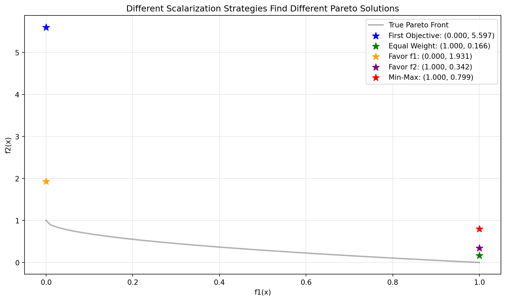
Comparison Results:
First Objective : f1=0.0000, f2=5.5965
Equal Weight : f1=1.0000, f2=0.1656
Favor f1 : f1=0.0000, f2=1.9310
Favor f2 : f1=1.0000, f2=0.3416
Min-Max : f1=1.0000, f2=0.799324.8 A Simple Visualization Example
The mo_mm_desirability_function computes the negative combined desirability for a candidate point x. It predicts the objective values using the provided surrogate models, computes the Morris-Mitchell improvement if requested, and then calculates the overall desirability using the provided DOverall object. The function returns the negative desirability (for minimization) and the list of individual objective values. Consider the following example usage:
Generate X_base in the range [0,1] as input data and evaluate the two-objective maximization function mo_conv2_max.
A smooth, convex two-objective maximization problem on [0, 1]^2 using flipped versions of the minimization objectives:
\[\begin{align} f1(x, y) = 2 - (x^2 + y^2)\\ f2(x, y) = 2 - ((1 - x)^2 + (1 - y)^2) \end{align}\]
It has the following properties:
- Domain: \([0, 1]^2\)
- Objectives: maximize both \(f1\) and \(f2\)
- Ideal points: \((0, 0)\) for \(f1\) (gives \(f1=2\)); \((1, 1)\) for \(f2\) (gives \(f2=2\))
- Pareto set: line \(x = y\) in \([0, 1]\)
- Pareto front: convex quadratic trade-off \(f1 = 2 - 2t^2\), \(f2 = 2 - 2(1 - t)^2\), \(t \in [0, 1]\)
X_base = np.random.rand(500, 2)
y = mo_conv2_max(X_base)The RandomForestRegressor models are fitted for each objective.
models = []
for i in range(y.shape[1]):
model = RandomForestRegressor(n_estimators=n_estimators, random_state=random_state, max_depth=max_depth)
model.fit(X_base, y[:, i])
models.append(model)# calculate base Morris-Mitchell stats
phi_base, J_base, d_base = mmphi_intensive(X_base, q=2, p=2)
print(f"phi_base: {phi_base}, J_base: {J_base}, d_base: {d_base}")phi_base: 6.212013258255464, J_base: [1 1 1 ... 1 1 1], d_base: [0.00133909 0.00224301 0.00243956 ... 1.32508419 1.3359148 1.338386 ]Figure 24.10 shows the surfaces of the two objectives using the fitted models.
x_min = 0
x_max = 1
combinations = [(0,1)]
target_names = ["y1", "y2"]
mo_xy_surface(models, bounds=[(x_min, x_max), (x_min, x_max)], target_names=target_names)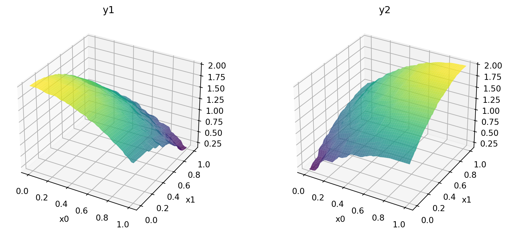
Figure 24.11 shows the contours of the two objectives using the fitted models.
x_min = 0
x_max = 1
mo_xy_contour(models, bounds=[(x_min, x_max), (x_min, x_max)], target_names=target_names)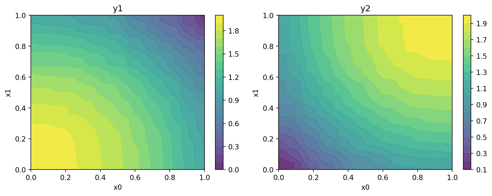
Figure 24.12 shows the Pareto front of the original data.
plot_mo(y_orig=y, target_names=target_names, combinations=combinations, pareto="max", pareto_front_orig=True, title="Original data. Pareto front (maximization)", pareto_label=True)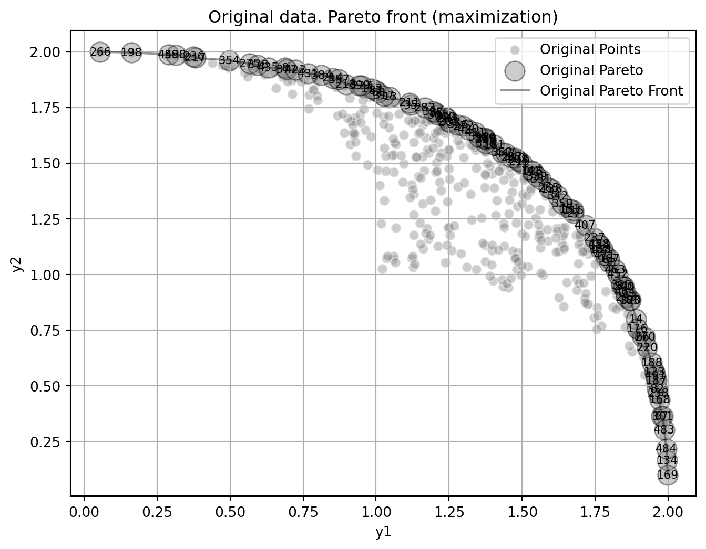
Figure 24.13 visualizes the Pareto-optimal points, i.e., the points in the input space that correspond to the Pareto front:
mo_pareto_optx_plot(X=X_base, Y=y, minimize=False)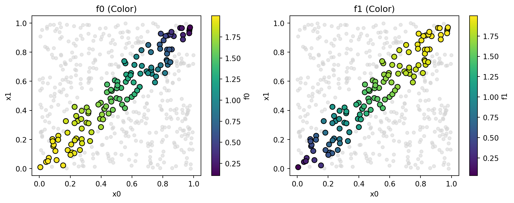
Compute desirability functions for each objective:
d_funcs = []
for i in range(y.shape[1]):
d_func = DMax(low=np.min(y[:, i]), high=np.max(y[:, i]))
d_funcs.append(d_func)The desirability functions can be visualized as follows:
d_funcs[0].plot(xlabel=target_names[0], figsize=(6,4))
d_funcs[1].plot(xlabel=target_names[1], figsize=(6,4))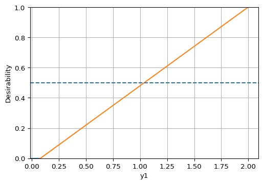
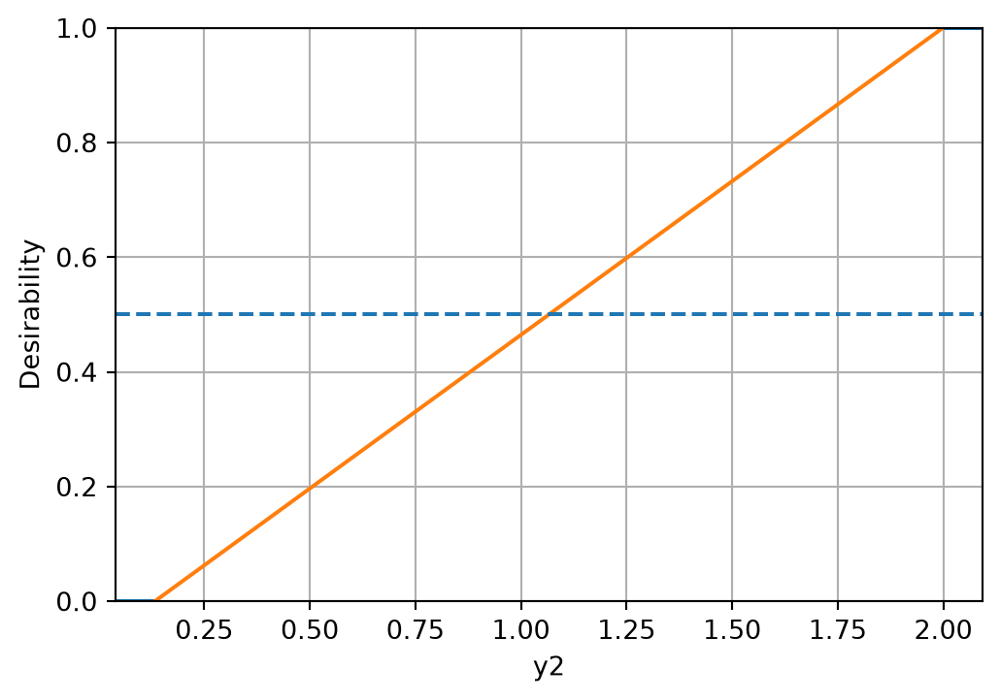
The minimal expected improvement of the Morris-Mitchell criterion is defined as 1 percent of the base value, and the maximal expected improvement as 10 percent of the base value. Then, the desirability function for Morris-Mitchell objective can be defined as follows:
# imp_min = phi_base * 0.01
# imp_max = phi_base * 0.1
# d_mm = DMax(low=imp_min, high=imp_max)
# d_mm.plot()Combine into overall desirability
# D_overall = DOverall(*d_funcs, d_mm)
D_overall = DOverall(*d_funcs)Now we can call the mo_mm_desirability_function with a test point:
x_test = np.array([0.5, 0.5]) # Example test point
neg_D, objectives = mo_mm_desirability_function(x_test, models, X_base, J_base, d_base, phi_base, D_overall, mm_objective=False)
print(f"Negative Desirability: {neg_D}")
print(f"Objectives: {objectives}")Negative Desirability: -0.7374994411771443
Objectives: [np.float64(1.4906734308429819), np.float64(1.5123762382740051)]mo_xy_desirability_plot(models, bounds=[(x_min, x_max), (x_min, x_max)], X_base=X_base, J_base=J_base, d_base=d_base, phi_base=phi_base, D_overall=D_overall, mm_objective=False)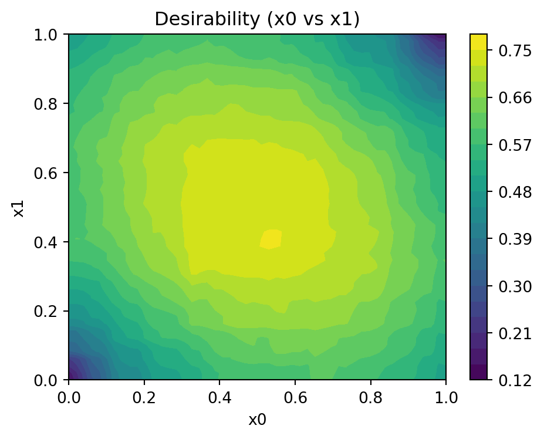
24.9 Jupyter Notebook
Note
- The Jupyter-Notebook of this chapter is available on GitHub in the Sequential Parameter Optimization Cookbook Repository